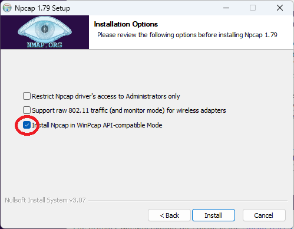

NetDebug Desktop Application
Windows Installation Instructions
-
In order to be able to capture packets (which is required for the
NetDebug desktop application), please first install the
Npcap package available for free from
https://npcap.com/dist/npcap-1.79.exe
. During installation, you MUST click the "Install Npcap in
WinPcap API-Compatible Mode" or NetDebug will not work.
-
NOTE 1: The npcap library is the standard packet capture library
used by wireshark, etc.
-
NOTE 2: This step should go away in the final production version of
NetDebug.

-
Run the
NetDebug-x.y.z Setup.exe to install the application
(there are no dialogs; it just installs).
NetDebug Limited Release “Technical Preview” End-User License Agreement
-
A preliminary version of the NetDebug debug software is being made
available for a limited time basis as a “technical preview” for testing
and evaluation of a small number of individuals. This means that it
should not be used in production or at large scale and thus no
warranties about the software working or not harming your computer
systems are expressed or implied.
-
With this license, End-Users are granted a license to use the NetDebug
software on their personal computers at no monetary charge. Users have
the right to make personal backups of the software but not to distribute
to others. When the production version of NetDebug becomes available,
users are expected to upgrade the software to the production version.{"
"}
-
While the final production version of NetDebug software will be made
available under an open-source license (exact license TBD), the
Technical Preview version will only have source code available under
Non-Disclosure Agreement (NDA).
-
The final version of NetDebug will employ significant personal-privacy
preserving technologies (hashing, data mixing, obfuscation, etc.) that
are not yet available/implemented in the Technical Preview. As a result,
use of this software implies that
{" "} users acknowledge that they will share with NetDebug their
personal network performance and network “metadata”{" "}
from their systems including but not limited to:
-
Latency, packet loss, network topology (e.g., traceroute)
information{" "}
-
Hosts/Websites visited (but not any packet payload/personally
identifiable information besides public IP address){" "}
- DNS requests/responses
-
Operating system statistics, log messages, and network settings
-
In return, NetDebug will take all reasonable steps to anonymize user
data including:
-
Not sharing personally identifiable information with third-parties
-
Protecting any potentially private information (e.g., public source
IP addresses) on the back-end systems until such time as full
privacy guards can be established (e.g., networking mixing)
-
End-users acknowledge that NetDebug’s business model is selling
insights, data, and alerts to third-parties derived from aggregated,
anonymized data collected in (4); the NetDebug software is only provided
at no charge because of this business model. Users who wish to use the
NetDebug software without participating in the data sharing described in
(4) will be able to do so by paying a monthly subscription fee.